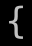

モンスター (Lv50-69) / Monsters (Lv50-69)
出現階層 50〜69 のモンスター（198 種）。名前をクリックすると個別の詳細ページが開きます。
Monsters native to dungeon level 50–69 (198). Click a name for its detail page.
| ID | 記号 / Sym | 名前 / Name | 階層 / Lv | 希少度 / Rar | 速度 / Spd | 体力 / HP | AC | 経験値 / Exp |
|---|---|---|---|---|---|---|---|---|
| 423 | アダマンタイトのクリーピングコイン Creeping adamantite coins |
50 | 6 | 130 | 60d25 | 100 | 1000 | |
| 718 | 長老岩 Greater wall monster |
50 | 4 | 120 | 15d40 | 80 | 500 | |
| 719 | ニカデーモン Nycadaemon |
50 | 3 | 120 | 31d99 | 80 | 10000 | |
| 720 | グレーター・バルログ Greater Balrog |
50 | 3 | 120 | 30d100 | 80 | 13000 | |
| 721 | メンデスの山羊 Goat of Mendes |
50 | 3 | 120 | 18d111 | 66 | 6666 | |
| 722 | ナイトウィング Nightwing |
50 | 4 | 120 | 60d30 | 120 | 6000 | |
| 723 | マウロタウロス Maulotaur |
50 | 2 | 130 | 250d13 | 50 | 4500 | |
| 790 | 万色デイドラ・ドラゴン Daedra Dragon of Many Colours |
50 | 2 | 120 | 60d50 | 125 | 18000 | |
| 917 | 上級修験者 High mystic |
50 | 3 | 125 | 11d100 | 60 | 6000 | |
| 942 | プラネター Planetar |
50 | 6 | 130 | 22d100 | 150 | 10000 | |
| 1010 | 金のエンゼル Golden Angel |
50 | 100 | 160 | 150d10 | 120 | 1 | |
| 1015 |  |
テポドン TaepoDong |
50 | 10 | 120 | 7d14 | 80 | 200 |
| 1022 | サイヤ人『ナッパ』 Nappa the Saiyan |
50 | 3 | 125 | 25d100 | 125 | 13500 | |
| 1084 | 『コカトリス』 Cockatrice |
50 | 3 | 115 | 60d60 | 100 | 33333 | |
| 1163 | クリスタル・キューブ Crystal cube |
50 | 4 | 125 | 1d3 | 200 | 2500 | |
| 1210 | ミラークの信者 Follower of Miraak |
50 | 5 | 120 | 40d40 | 80 | 1600 | |
| 1211 | ミラークの信者 Follower of Miraak |
50 | 5 | 120 | 40d40 | 80 | 1600 | |
| 1243 | 巨大バシリスク Greater basilisk |
50 | 2 | 120 | 75d30 | 100 | 11000 | |
| 1245 | エッヂ Chronium edge |
50 | 2 | 140 | 20d20 | 0 | 1500 | |
| 1246 | アイ・ホーン Eye phorn |
50 | 2 | 110 | 20d20 | 0 | 500 | |
| 1322 | 溶岩の怪物『ヨガン』 Magman, Lava monster |
50 | 4 | 107 | 30d100 | 110 | 15000 | |
| 1412 | 赤ライネル Red lynel |
50 | 2 | 120 | 150d10 | 90 | 7500 | |
| 704 | ファスティトカロン Fastitocalon |
51 | 3 | 120 | 45d100 | 150 | 16000 | |
| 724 | 冥界ハウンド Nether hound |
51 | 2 | 120 | 60d10 | 100 | 5000 | |
| 725 | タイム・ハウンド Time hound |
51 | 4 | 125 | 60d10 | 100 | 5000 | |
| 726 | プラズマ・ハウンド Plasma hound |
51 | 2 | 120 | 60d10 | 100 | 5000 | |
| 727 | デーモン・クイルスルグ Demonic quylthulg |
51 | 1 | 120 | 48d10 | 1 | 3000 | |
| 729 | トロルの『ウリク』 Ulik the Troll |
51 | 4 | 130 | 35d100 | 120 | 18000 | |
| 730 | ミノタウロスの王『バフォメット』 Baphomet the Minotaur Lord |
51 | 4 | 130 | 35d100 | 120 | 18000 | |
| 875 | ストームトロル Storm troll |
51 | 2 | 120 | 60d50 | 110 | 3500 | |
| 886 | 闇のエルフの影 Dark elven shade |
51 | 2 | 130 | 48d18 | 50 | 6000 | |
| 887 | 魔力ハウンド Mana hound |
51 | 4 | 125 | 60d10 | 100 | 4000 | |
| 991 | オーディンの乗馬『スレイプニル』 Sleipnir, Odin's Steed |
51 | 3 | 130 | 40d100 | 140 | 17000 | |
| 1032 | 『マダム・デビ』 Madame Debby |
51 | 3 | 120 | 24d100 | 100 | 16000 | |
| 1208 | 冥界の支配者『ダーネヴィール』 Durnehviir, the governor of Soul Cairn |
51 | 2 | 120 | 50d60 | 130 | 22000 | |
| 1219 | ドラウグル・デス・オーバーロード Draugr death overlord |
51 | 4 | 120 | 100d26 | 90 | 13000 | |
| 1230 | グレーター・ファルメル・ナイトプロウラー Greater falmer nightprowler |
51 | 3 | 120 | 55d40 | 120 | 10000 | |
| 1260 | 天使・クイルスルグ Angel quylthulg |
51 | 2 | 120 | 48d10 | 1 | 3000 | |
| 684 | 塵の中を歩くもの『クァチル・ウタウス』 Quachil Uttaus, Treader of the Dust |
52 | 3 | 120 | 50d66 | 80 | 20000 | |
| 731 | 地獄の騎士 Hell knight |
52 | 1 | 120 | 15d100 | 110 | 7000 | |
| 732 | リンゴ嫌い『ブル・ゲイツ』 Bull Gates, the applephobe |
52 | 3 | 140 | 25d100 | 90 | 18000 | |
| 781 | アンデッド・ビホルダー Undead beholder |
52 | 4 | 120 | 37d99 | 80 | 6000 | |
| 939 | ディアの『ホアルムラス』 Hoarmurath of Dir |
52 | 3 | 120 | 25d100 | 100 | 20000 | |
| 1037 | 聖堂騎士 Knight templar |
52 | 2 | 120 | 60d25 | 130 | 5000 | |
| 1181 | アイアン・リッチ Iron lich |
52 | 3 | 120 | 28d100 | 100 | 19000 | |
| 1187 | グレーター・タイタン Greater titan |
52 | 1 | 120 | 70d50 | 125 | 18000 | |
| 1226 | ファルメル・シャドウマスター Falmer shadowmaster |
52 | 3 | 120 | 75d49 | 100 | 10000 | |
| 1241 | グレート・ドラコリッチ Greater Dracolich |
52 | 3 | 120 | 28d100 | 120 | 23000 | |
| 1242 | グレート・ドラコリスク Greater Dracolisk |
52 | 3 | 120 | 28d100 | 120 | 23000 | |
| 1247 | ゲイツの宿敵『スティーヴン・ジョーブツ』 Steven Jobz, the rival of Gates |
52 | 5 | 140 | 25d100 | 90 | 20000 | |
| 1258 | 『ロボ・ガンダルフ』 Robo-Gandalf |
52 | 3 | 120 | 55d50 | 140 | 15000 | |
| 734 | 迷路の神『アイホート』 Eihort, the Thing in the Labyrinth |
53 | 3 | 120 | 33d100 | 90 | 25000 | |
| 735 | 『黄衣の王』 The King in Yellow |
53 | 3 | 120 | 32d100 | 100 | 30000 | |
| 738 | 東夷『カムル』 Khamul the Easterling |
53 | 3 | 120 | 35d100 | 100 | 22000 | |
| 1292 | 『チョコラータ』 Cioccolata |
53 | 2 | 130 | 100d30 | 100 | 20000 | |
| 717 | 地獄の番犬『ガルム』 Garm, Guardian of Hel |
54 | 2 | 120 | 30d100 | 120 | 22000 | |
| 739 | ティンダロスの猟犬 Hound of Tindalos |
54 | 3 | 120 | 60d15 | 100 | 8000 | |
| 740 | レッサー・クラーケン Lesser kraken |
54 | 2 | 120 | 150d22 | 150 | 20000 | |
| 743 | 『火の鳥』 The Phoenix |
54 | 3 | 120 | 36d100 | 130 | 25000 | |
| 744 | ナイトクローラー Nightcrawler |
54 | 4 | 120 | 80d60 | 160 | 8100 | |
| 747 | 地底を掘り進むもの『シュド=メル』 Shudde M'ell, The Burrowers Beneath |
54 | 2 | 125 | 100d40 | 90 | 23000 | |
| 874 | グレート・インフェルノ・ドレイク Great Inferno Drake |
54 | 2 | 120 | 30d80 | 110 | 18000 | |
| 1043 | 『ペットショップ』 Petshop |
54 | 3 | 120 | 36d100 | 130 | 25000 | |
| 1058 | エルダー・バンパイア Elder vampire |
54 | 3 | 120 | 34d100 | 90 | 7500 | |
| 1094 | コーウィンの銃士 Gunner of Corwin |
54 | 3 | 115 | 50d10 | 80 | 3200 | |
| 1188 | バイル・ワイアーム Bile Wyrm |
54 | 1 | 120 | 66d50 | 125 | 14000 | |
| 1190 | ストーム・ワイアーム Storm Wyrm |
54 | 1 | 120 | 66d50 | 125 | 14000 | |
| 1194 | アイス・ワイアーム Great Ice Wyrm |
54 | 1 | 120 | 66d50 | 125 | 14000 | |
| 1196 | ヴェノム・ワイアーム Venom Wyrm |
54 | 1 | 120 | 66d50 | 125 | 14000 | |
| 1201 | グレート・クリスタル・ドレイク Great Crystal Drake |
54 | 2 | 120 | 80d30 | 110 | 18000 | |
| 1202 | グレート・ロア・ドレイク Great Roar Drake |
54 | 2 | 120 | 80d30 | 110 | 18000 | |
| 1281 | グレート・イクリプス・ドレイク Great Eclipse Drake |
54 | 2 | 120 | 80d30 | 110 | 18000 | |
| 468 | 大鷲王『ソロンドール』 Thorondor |
55 | 1 | 145 | 39d100 | 65 | 22222 | |
| 714 | 双子のひわいなるもの『ツァール』 Zhar the Twin Obscenity |
55 | 3 | 120 | 50d100 | 120 | 15000 | |
| 748 | 手のドルジ Hand druj |
55 | 4 | 130 | 60d10 | 110 | 6000 | |
| 749 | 目のドルジ Eye druj |
55 | 4 | 130 | 10d100 | 90 | 12000 | |
| 751 | カオス・ボルテックス Chaos vortex |
55 | 2 | 140 | 32d20 | 80 | 4000 | |
| 752 | エーテル・ボルテックス Aether vortex |
55 | 2 | 130 | 32d20 | 40 | 4500 | |
| 753 | ヘルドレイク『ニーズホッグ』 Nidhogg the Hel-Drake |
55 | 2 | 120 | 39d111 | 133 | 25000 | |
| 754 | 『レルニアン・ヒドラ』 The Lernean Hydra |
55 | 2 | 120 | 45d100 | 140 | 20000 | |
| 755 | 吸血鬼の使者『スリングウェシル』 Thuringwethil, the Vampire Messenger |
55 | 4 | 130 | 40d100 | 145 | 23000 | |
| 757 | 名状しがたきもの『ハスター』 Hastur the Unspeakable |
55 | 4 | 120 | 55d95 | 150 | 23000 | |
| 758 | <コーン>の渇血悪魔 Bloodthirster |
55 | 3 | 144 | 60d70 | 180 | 19500 | |
| 759 | ドラゴン・クイルスルグ Draconic quylthulg |
55 | 3 | 120 | 72d10 | 1 | 5500 | |
| 1005 | 暗黒城の魔術師『アンサロム』 Ansalom, the Dark Wizard |
55 | 10 | 120 | 22d150 | 100 | 20000 | |
| 1049 | 鋼鉄ドラゴン Steel dragon |
55 | 3 | 120 | 100d50 | 200 | 10000 | |
| 1068 | 混沌のサマ師『ディオニソス』 Dionysus, the Munchkin of Chaos |
55 | 7 | 154 | 10d100 | 162 | 10000 | |
| 1069 | 魔人『ウォーケン』 Walken |
55 | 7 | 125 | 40d100 | 140 | 15000 | |
| 1192 | ヘル・ワイアーム Great Hell Wyrm |
55 | 1 | 120 | 76d50 | 130 | 16000 | |
| 1207 | 声の道を導きしもの『パーサーナックス』 Paarthurnax, the guru of the way of the voice |
55 | 3 | 120 | 50d75 | 120 | 25000 | |
| 1351 | ヴォイド・ボルテックス Void vortex |
55 | 2 | 140 | 32d20 | 80 | 4000 | |
| 1352 | アビス・ボルテックス Abyss vortex |
55 | 2 | 140 | 32d20 | 80 | 4000 | |
| 1361 | 『メガ・フレイム・ドラゴン』 Great Fire Dragon |
55 | 4 | 120 | 70d50 | 130 | 20000 | |
| 1368 | 石の宝箱 Stone loot box mimic |
55 | 1 | 115 | 200d25 | 160 | 1000 | |
| 1413 | 青ライネル Blue lynel |
55 | 2 | 120 | 225d10 | 100 | 15000 | |
| 709 | フルゥ Hru |
56 | 3 | 120 | 40d100 | 150 | 17500 | |
| 760 | ありうべからざるもの『ニョグタ』 Nyogtha, the Thing that Should not Be |
56 | 2 | 130 | 55d99 | 120 | 20000 | |
| 761 | ナイアルラトホテップの化身『アフトゥ』 Ahtu, Avatar of Nyarlathotep |
56 | 3 | 130 | 50d110 | 120 | 22500 | |
| 762 | 青き衣の『フンディン』 Fundin Bluecloak |
56 | 2 | 130 | 50d100 | 195 | 20000 | |
| 763 | 線の巨匠『ドワーキン』 Dworkin Barimen |
56 | 2 | 130 | 100d48 | 195 | 22200 | |
| 977 | ゴンドリンを裏切りし『マイグリン』 Maeglin, Betrayer of Gondolin |
56 | 5 | 120 | 32d100 | 50 | 20000 | |
| 1085 | マインドワーム Mind Worm |
56 | 3 | 125 | 120d10 | 80 | 4000 | |
| 1294 | 『いなずま・あらし』 Thunder and Storm |
56 | 3 | 125 | 40d100 | 120 | 15000 | |
| 733 | 『サンタクロース』 Santa Claus |
57 | 3 | 150 | 25d100 | 100 | 40000 | |
| 1106 | 光の堕天使『エミリオ・ミハイロフ』 Emilio Michaelov, Fallen Angel of Light |
57 | 5 | 127 | 50d100 | 160 | 30000 | |
| 1134 | 冥界の裁判長『閻魔大王』 Yama, the Judge of the afterlife |
57 | 2 | 120 | 55d60 | 100 | 24000 | |
| 1184 | 腐敗ビホルダー Rotten beholder |
57 | 4 | 120 | 27d100 | 80 | 6000 | |
| 766 | 黒竜『アンカラゴン』 Ancalagon the Black |
58 | 3 | 120 | 75d100 | 125 | 30000 | |
| 767 | ヴェールを与えるもの『ダオロス』 Daoloth, the Render of the Veils |
58 | 3 | 120 | 72d100 | 125 | 27500 | |
| 1033 | 『ディファイラー』 The Defiler |
58 | 3 | 120 | 75d100 | 120 | 30000 | |
| 1286 | 『サウロンのロ』 The Ro of Sauron |
58 | 3 | 120 | 35d100 | 100 | 19000 | |
| 768 | ナイトウォーカー Nightwalker |
59 | 4 | 130 | 50d65 | 175 | 15000 | |
| 935 | 『ドルアーガ』 Druaga |
59 | 2 | 120 | 45d100 | 120 | 28000 | |
| 1177 | 修験道師範代 Acting master mystic |
59 | 3 | 125 | 22d90 | 80 | 15000 | |
| 1231 | グレーター・ファルメル・シャドウマスター Greater falmer shadowmaster |
59 | 4 | 120 | 70d40 | 130 | 18000 | |
| 1295 | あつくもえるてき Soul Consuming Flame |
59 | 6 | 130 | 60d30 | 6 | 12000 | |
| 737 | 混沌の王族 Lord of Chaos |
60 | 3 | 130 | 45d55 | 80 | 17500 | |
| 771 | 万色の『サルマン』 Saruman of Many Colours |
60 | 1 | 120 | 50d100 | 100 | 35000 | |
| 772 | 灰色の『ガンダルフ』 Gandalf the Grey |
60 | 7 | 120 | 49d101 | 100 | 35000 | |
| 773 | アンバーの狂気の夢想家『ブランド』 Brand, Mad Visionary of Amber |
60 | 1 | 120 | 50d100 | 100 | 35000 | |
| 879 | 王蟲 Ohmu |
60 | 20 | 110 | 100d10 | 90 | 2300 | |
| 968 | 氷竜『ブラムド』 Bramd the Ice Dragon |
60 | 7 | 125 | 50d101 | 150 | 22500 | |
| 969 | 水竜『エイブラ』 Eibra the Water Dragon |
60 | 7 | 125 | 50d101 | 150 | 22500 | |
| 970 | 邪竜『ナース』 Narse the Black Dragon |
60 | 7 | 125 | 50d101 | 150 | 22500 | |
| 971 | 金鱗の竜王『マイセン』 Mycen the Gold Dragon |
60 | 7 | 125 | 50d101 | 150 | 22500 | |
| 972 | 火竜山の魔竜『シューティングスター』 Shooting Star the Red Dragon |
60 | 7 | 130 | 65d101 | 150 | 22500 | |
| 1135 | 狂気を紡ぎしもの『アブドゥル・アルハザード』 Abdul Alhazred, the Mad Arab |
60 | 2 | 120 | 50d100 | 100 | 35000 | |
| 1198 | 万色ワイアーム Wyrm of Many Colours |
60 | 2 | 120 | 100d48 | 140 | 28000 | |
| 1227 | ファルメル・ウォーモンガー Falmer warmonger |
60 | 3 | 120 | 100d49 | 120 | 18000 | |
| 1271 | 吸魂鬼 Dementor |
60 | 4 | 120 | 10d100 | 100 | 5000 | |
| 1288 | 魔王の使い Demon at arms |
60 | 3 | 120 | 15d100 | 230 | 20000 | |
| 1299 | 『ロストリンギル大佐』 The Colonel Lostringil |
60 | 5 | 115 | 40d100 | 150 | 20000 | |
| 1362 | ティーパーティーの魔女『聖園ミカ』 Mika Misono, the witch of Tea Party |
60 | 2 | 120 | 888d7 | 160 | 25000 | |
| 1364 | 這いずる粘体 Creeping Ooze |
60 | 3 | 118 | 100d20 | 80 | 8000 | |
| 1367 | 金色の宝箱 Golden loot box mimic |
60 | 4 | 117 | 20d51 | 80 | 3000 | |
| 1414 | 白ライネル White lynel |
60 | 2 | 120 | 300d10 | 110 | 20000 | |
| 742 | デミリッチ Demilich |
61 | 2 | 120 | 30d100 | 100 | 14500 | |
| 745 | 変幻の魔公 Lord of Change |
61 | 3 | 130 | 50d70 | 150 | 17000 | |
| 746 | 禁断の護り手 Keeper of Secrets |
61 | 3 | 130 | 60d70 | 150 | 17000 | |
| 770 | 混沌の覇者『はぶ』 Habu the Champion of Chaos |
61 | 2 | 130 | 111d66 | 175 | 22000 | |
| 937 | サイバー『レムス』 Lems the Cyborg |
61 | 3 | 130 | 50d100 | 160 | 26000 | |
| 1213 | ヴォルキハル城の主『ハルコン』 Harkon, the patriarch of Volkihar castle |
61 | 2 | 120 | 70d80 | 120 | 29000 | |
| 1255 | 単龍虫 Dragon insect |
61 | 255 | 120 | 25d20 | 150 | 2500 | |
| 1256 | 龍虫 Dragon worm |
61 | 255 | 120 | 50d20 | 150 | 5500 | |
| 1257 | 百足龍虫 Dragon centipede |
61 | 2 | 120 | 100d20 | 150 | 8500 | |
| 1330 | 闇の帝王『ヴォルデモート』 Voldemort, the Dark Lord |
61 | 4 | 120 | 50d100 | 100 | 30000 | |
| 774 | シャドウ・ロード Shadowlord |
62 | 2 | 120 | 30d100 | 150 | 22500 | |
| 777 | 猫の女神『バスト』 Bast, Goddess of Cats |
62 | 3 | 130 | 48d100 | 200 | 30500 | |
| 936 | 北斗神拳の使い手『ケンシロウ』 Kenshirou the Fist of the North Star |
62 | 2 | 123 | 60d100 | 170 | 30000 | |
| 1086 | アイル・オブ・ディープ Isle of the Deep |
62 | 3 | 125 | 200d20 | 100 | 10000 | |
| 1306 | ソーシャルディスタンスの王者『リー・ナス』 Lee Qiezi, the King of Social Distance and Fucking Fucker who Fucks |
62 | 4 | 120 | 80d60 | 100 | 19000 | |
| 696 | ナズグル Nazgul |
63 | 7 | 125 | 66d66 | 141 | 22000 | |
| 736 | 偉大なる不浄 Great unclean one |
63 | 3 | 120 | 165d40 | 150 | 24000 | |
| 775 | グレーター・クラーケン Greater kraken |
63 | 2 | 120 | 40d100 | 175 | 25000 | |
| 780 | 闇貴公子『ヴラド』 Vlad Dracula, Prince of Darkness |
63 | 4 | 130 | 50d100 | 166 | 33333 | |
| 872 | 『八岐大蛇』 The Yamata-no-Orochi |
63 | 2 | 123 | 60d100 | 160 | 35000 | |
| 1356 | ラフィーII Laffey II |
63 | 3 | 125 | 50d40 | 180 | 35000 | |
| 1357 | ウサウサストライカー Bunbun Striker |
63 | 255 | 112 | 25d40 | 90 | 5000 | |
| 1365 | タイタン・ゾンビ Fallen titan |
63 | 1 | 120 | 50d90 | 90 | 12000 | |
| 716 | ベヒーモス Behemoth |
64 | 3 | 125 | 50d100 | 180 | 24000 | |
| 776 | アーチリッチ Archlich |
64 | 2 | 120 | 35d100 | 120 | 20000 | |
| 943 | ソーラー Solar |
64 | 6 | 130 | 100d30 | 160 | 22000 | |
| 1178 | 修験道免許皆伝者 Grand master mystic |
64 | 3 | 130 | 22d100 | 80 | 20000 | |
| 1189 | グレート・バイル・ワイアーム Great Bile Wyrm |
64 | 2 | 125 | 50d100 | 150 | 30000 | |
| 1191 | グレート・ストーム・ワイアーム Great Storm Wyrm |
64 | 2 | 125 | 50d100 | 150 | 30000 | |
| 1195 | グレート・アイス・ワイアーム Great Ice Wyrm |
64 | 2 | 125 | 50d100 | 150 | 30000 | |
| 1197 | グレート・ヴェノム・ワイアーム Great Venom Wyrm |
64 | 2 | 125 | 50d100 | 150 | 30000 | |
| 1394 | ブラックマーケットの上級エージェント Master agent of black market |
64 | 8 | 130 | 50d20 | 150 | 5000 | |
| 750 | 頭蓋のドルジ Skull druj |
65 | 4 | 130 | 14d100 | 120 | 12500 | |
| 778 | ジャバーウォック Jabberwock |
65 | 4 | 130 | 32d100 | 125 | 19000 | |
| 779 | カオス・ハウンド Chaos hound |
65 | 1 | 120 | 60d30 | 100 | 6000 | |
| 881 | 超人『ロック』 Locke, the Superman |
65 | 3 | 130 | 60d100 | 170 | 32000 | |
| 882 | 皇帝『レイザーク』 Layzark, the Emperor |
65 | 3 | 135 | 72d100 | 140 | 32000 | |
| 930 | 超人ロックのクローン Clone of Locke the Superman |
65 | 30 | 130 | 30d100 | 130 | 18000 | |
| 1045 | 分解ボルテックス Disintegration vortex |
65 | 6 | 140 | 32d20 | 80 | 5000 | |
| 1249 | 『リュキアのキマイラ』 The Lycian Chimaera |
65 | 2 | 125 | 45d70 | 200 | 20000 | |
| 1290 | 『ヴィネガー・ドッピオ』 Vinegar Doppio |
65 | 5 | 130 | 10d100 | 100 | 5555 | |
| 1415 | 銀ライネル Silver lynel |
65 | 2 | 125 | 375d10 | 120 | 25000 | |
| 878 | 『ディオ・ブランドー』 Dio Brando |
66 | 4 | 130 | 50d100 | 166 | 33333 | |
| 1193 | グレート・ヘル・ワイアーム Great Hell Wyrm |
66 | 2 | 125 | 115d50 | 155 | 35000 | |
| 1291 | 『ディアボロ』 Diavolo |
66 | 255 | 130 | 50d100 | 100 | 55555 | |
| 1366 | 虹色の宝箱 Legendary loot box mimic |
66 | 8 | 122 | 20d130 | 140 | 7000 | |
| 783 | カオス・ワイアーム Great Wyrm of Chaos |
67 | 2 | 120 | 45d100 | 170 | 25000 | |
| 784 | ロー・ワイアーム Great Wyrm of Law |
67 | 2 | 120 | 45d100 | 170 | 25000 | |
| 786 | シャンブラー Shambler |
67 | 4 | 130 | 50d100 | 150 | 22500 | |
| 787 | 眠りの主『ヒュプノス』 Hypnos, Lord of Sleep |
67 | 2 | 130 | 51d99 | 150 | 36000 | |
| 788 | 『グラーキ』 Glaaki |
67 | 2 | 130 | 52d99 | 150 | 36000 | |
| 789 | ごまかしの名手『ブレイズ』 Bleys, Master of Manipulation |
67 | 1 | 130 | 50d100 | 100 | 35000 | |
| 946 | 静の魔王『氷のジシスル』 Jisisl of Ice |
67 | 2 | 125 | 60d100 | 120 | 30000 | |
| 1079 | 『見えざるピンクのユニコーン』 Invisible Pink Unicorn |
67 | 3 | 140 | 67d89 | 123 | 34567 | |
| 1332 | 巨獣『ヅガッダグドマネング』 The Zguddagdmanaing Gigantic-Beast |
67 | 3 | 100 | 111d111 | 111 | 25000 | |
| 791 | 女魔術師『フィオナ』 Fiona the Sorceress |
68 | 1 | 130 | 49d99 | 100 | 35000 | |
| 792 | ドリードロード『ツエラクス』 Tselakus, the Dreadlord |
68 | 2 | 130 | 65d100 | 150 | 35000 | |
| 1087 | チロン・ローカスト Locust of Chiron |
68 | 3 | 130 | 150d10 | 80 | 5000 | |
| 1232 | グレーター・ファルメル・ウォーモンガー Greater falmer warmonger |
68 | 4 | 125 | 70d55 | 150 | 27000 | |
| 794 | アーデンの森の主『ジュリアン』 Julian, Master of Arden Forest |
69 | 1 | 130 | 55d100 | 100 | 36000 | |
| 1018 | 世紀末覇者『ラオウ』 Raou the Conqueror |
69 | 2 | 123 | 66d139 | 170 | 30000 | |
| 1026 | 老ソーサラー Old sorcerer |
69 | 3 | 130 | 52d25 | 60 | 5000 |
🤖 このページは
lib/edit/MonraceDefinitions.jsoncから自動生成されています。手動で編集しないでください — 変更は次回の再生成で上書きされます。 This page is auto-generated fromlib/edit/MonraceDefinitions.jsonc. Do not edit by hand — changes are overwritten on regeneration. 生成 / Generated: 2026-07-14 04:02 UTC · hengband559732b34f·tools/generate-wiki.mjs